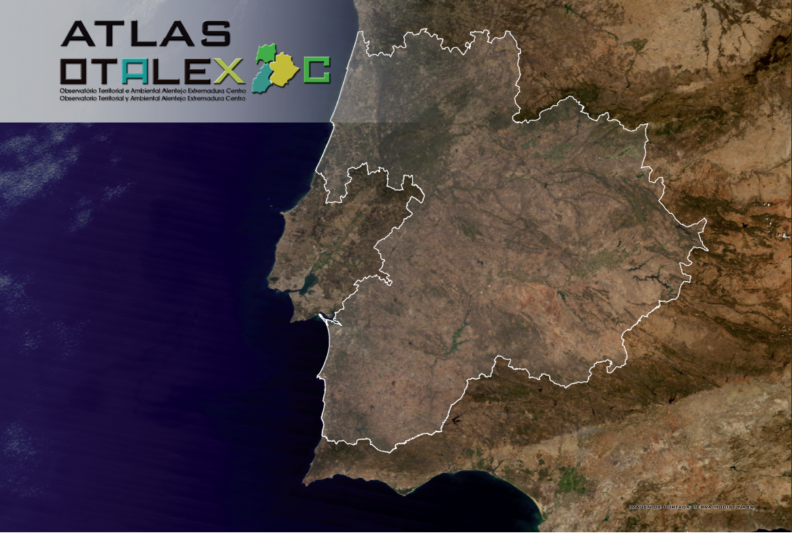

|
|
OTALEX Linked DataEl Atlas Otalex C es el resultado de una larga serie de proyectos transfronterizos en los que prevalece la fructífera colaboración de los territorios y la defensa de sus intereses comunes. La iniciativa otalex.linkeddata.es propone convertir los datos del atlas a un formato más estructurado y publicarlos siguiendo los principios de Linked Data. En esta página se puede encontrar más información acerca de los modelos y tecnologías utilizados para exponer los datos, un endpoint para resolver consultas en el repositorio y un visualizador) que permite ver los datos actualmente expuestos en el repositorio.  |
Quiénes somosEsta iniciativa esté desarrollada por Ontology Engineering Group (OEG)
|